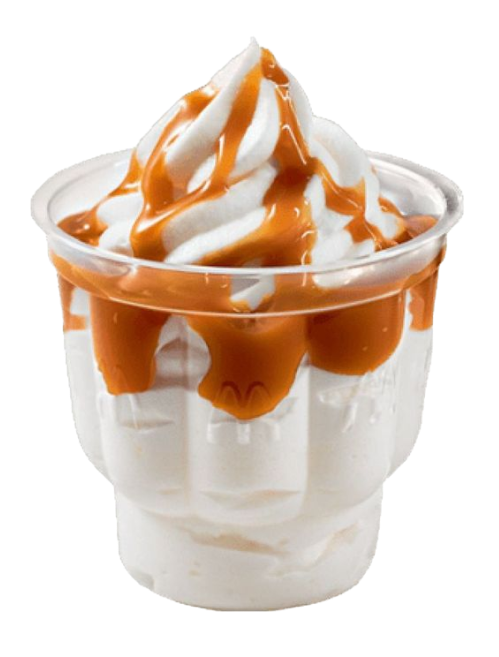
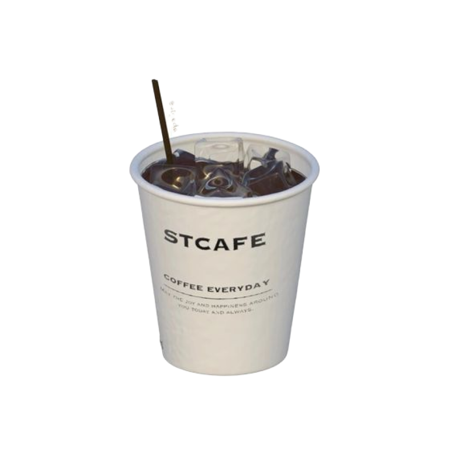
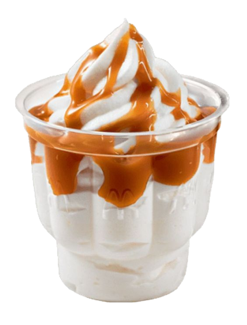
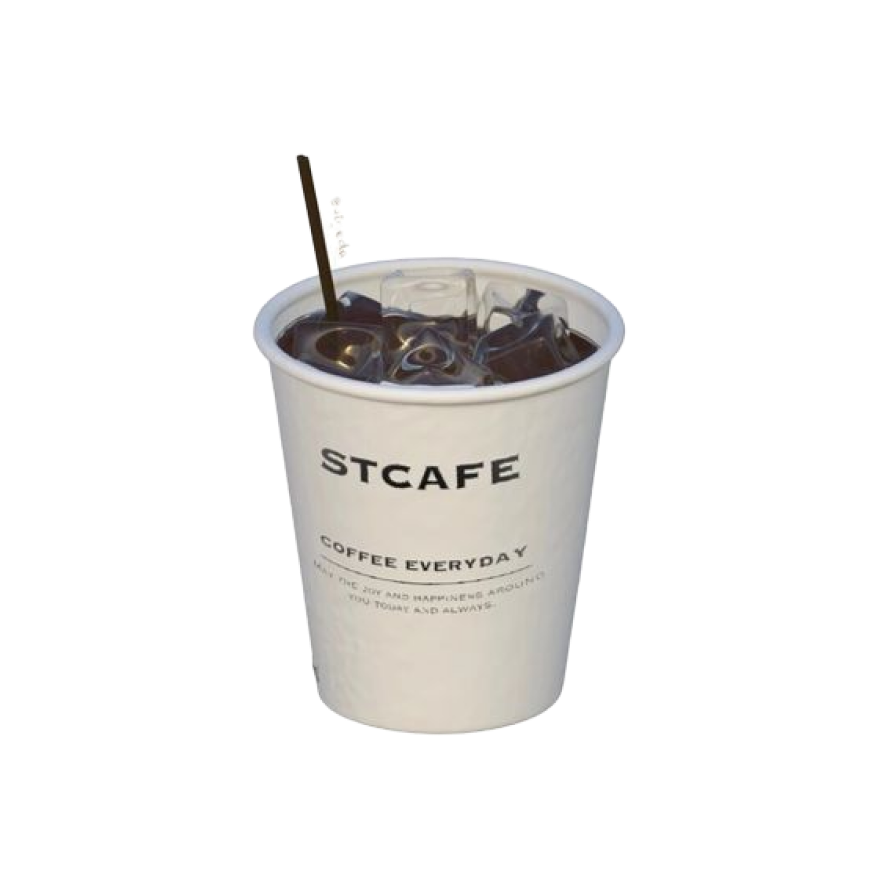
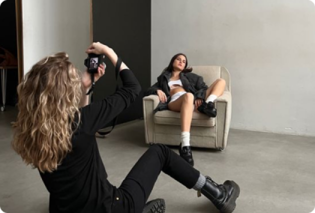
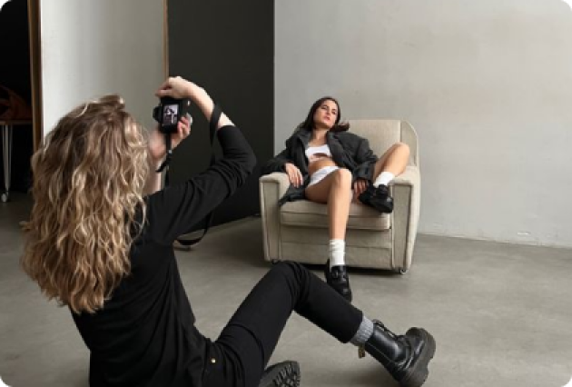

Узнайте больше о блогинге и о том, зачем это нужно

  
  


Блогинг позволяет находить единомышленников, а также делиться своими навыками, талантами и идеями с обществом.
Блогеры используют разные форматы контента: видео, фото, посты, статьи, короткие заметки, иллюстрации, подкасты. Блогинг помогает продвигать личный бренд, демонстрировать себя как специалиста в определенной сфере или создать сообщество наподобие «клуба по интересам». Условно все виды блогов можно разделить на личные и коммерческие.
В личных блогах на первом месте стоит потребность в коммуникации с другими людьми, поэтому монетизация либо отсутствует, либо отходит на второй план. Со временем такие блоги могут трансформироваться в коммерческие. Коммерческие блоги нацелены в первую очередь на монетизацию. Такой блогинг представляет собой долгосрочный проект со стратегией.


Катя Клэп
Блогинг позволяет находить единомышленников, а также делиться своими навыками, талантами и идеями с обществом.

Катя Клэп

Фотоблогинг

Видеоблогинг
Фуд-блогинг

Фитнес блогинг

Гейм-блогинг
Обычные пользователи могут вести блоги для удовольствия и в качестве хобби, чтобы делиться своими мыслями, чувствами, воспоминаниями, доносить информацию, которую считают важной, находить единомышленников.
В случае обретения популярности блог может стать для автора дополнительным или основным источником дохода. Экспертам блоги помогают продвигать личный бренд, демонстрировать свои достижения, привлекать клиентов, партнеров и работодателей.
Фотоблогинг
Видеоблогинг
Фуд-блогинг
Фитнес блогинг
Гейм-блогинг
Обычные пользователи могут вести блоги дляудовольствия и в качестве хобби, чтобы делиться своими мыслями, чувствами, воспоминаниями, доносить информацию, которую считают важной, находить единомышленников.
В случае обретения популярности блог может стать для автора дополнительным или основным источником дохода. Экспертам блоги помогают продвигать личный бренд, демонстрировать свои достижения, привлекать клиентов, партнеров и работодателей.
Со временем любой популярный блогер заводит команду помощников из-за развития страницы и увеличения числа подписчиков.

Копирайтеры и редакторы, которые отвечают за контент-план, планируют темы и график публикаций, создают тексты, генерируют новые идеи контента, проверяют материалы перед размещением. Видеографы и фотографы помогают создавать фото- и видеоконтент. Менеджеры занимаются поиском партнеров, общением с рекламодателями, организуют сотрудничество с клиентами и другими блогерами. SMM-щики продвигают блог в социальных сетях, общаются с аудиторией, отвечают на комментарии. SEO-специалисты занимаются поисковой оптимизацией контента.
 


Со временем любой популярный блогер заводит команду помощников из-за развития страницы и увеличения числа подписчиков.
Копирайтеры и редакторы, которые отвечают за контент-план, планируют темы и график публикаций, создают тексты, генерируют новые идеи контента, проверяют материалы перед размещением. Видеографы и фотографы помогают создавать фото- и видеоконтент. Менеджеры занимаются поиском партнеров, общением с рекламодателями, организуют сотрудничество с клиентами и другими блогерами.SMM-щики продвигают блог в социальных сетях, общаются с аудиторией, отвечают на комментарии.SEO-специалисты занимаются поисковой оптимизацией контента.


Со временем любой популярный блогер заводит команду помощников из-за развития страницы и увеличения числа подписчиков.
Копирайтеры и редакторы, которые отвечают за контент-план, планируют темы и график публикаций, создают тексты, генерируют новые идеи контента, проверяют материалы перед размещением. Видеографы и фотографы помогают создавать фото- и видеоконтент. Менеджеры занимаются поиском партнеров, общением с рекламодателями, организуют сотрудничество с клиентами и другими блогерами.SMM-щики продвигают блог в социальных сетях, общаются с аудиторией, отвечают на комментарии.SEO-специалисты занимаются поисковой оптимизацией контента.


Рабочее место блогера
Способ монетизации блога во многом зависит от площадки, на которой размещен блог. Поэтому, методы заработка на веб-сайте и, например, Instagram-аккаунте будут существенно отличаться. Ниже мы рассмотрим те способы монетизации, которые можно использовать независимо от места расположения блога и его контента.
Продажа товаров и услуг, размещение рекламы, платная подписка, донаты от лояльной аудитории, партнерские программы, премиальный контент, онлайн-ивенты. Лояльная аудитория — это первые и самые верные покупатели. Поэтому, монетизация блога часто начинается с продажи мерча, авторских работ или услуг. Чтобы не ограничивать благодарных пользователей, многие блогеры предоставляют данные своих электронных кошельков. Собранные средства часто используют для повышения качества контента, улучшения технического оснащения или покупки материалов.

Материалы для контента
Процесс создания контента

Будни блогеров
Рабочее место блогера

Материалы для контента
Процесс создания контента

Будни блогеров


Чтобы привлекать целевую аудиторию, блог должен иметь четкую тематическую направленность.

Инфлюенсер
Охватить в одном блоге лучшие места для путешествий, кулинарные рецепты на скорую руку и советы по детской психологии, наверное, можно. Однако чтобы удерживать внимание подписчиков, лучше сосредоточиться на чем-то конкретном. Важно учитывать регулярность публикаций. Если контент появляется редко, текущие подписчики начнут со временем отписываться, а новые просто не появятся.
Публикации, будь то посты, статьи или видеоролики, должны быть содержательными, интересными, полезными. Конкуренция среди блогеров высокая, поэтому значение имеет каждая деталь: и текстовое наполнение, и качественная картинка. Чтобы повысить видимость блога в результатах поиска и привлечь больше потенциальных подписчиков, следует освоить хотя бы на базовом уровне основы поисковой оптимизации.